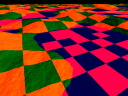
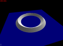
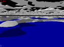
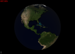
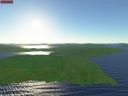
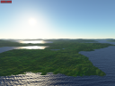
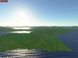
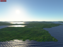
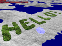
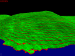

The following examples show how the Proland terrain plugin producers can be used. Since each example builds upon the previous ones, you should read them in order.
- Terrain1 example
- Terrain2 example
- Terrain3 example
- Terrain4 example
- Terrain5 example
- Preprocess example
Exercises (using also the edit, atmo and ocean plugins).
Terrain1 example
This example extends the helloworld example from the Proland Core documentation with the use of an elevation producer and of a normal producer. The HelloWorld.cpp file is exactly the same (except the constants related to the terrain size). The only differences are in the resource files, thereby showing that the previous C++ code is in fact quite generic.
The first differences are in the "helloworld.xml" file:
<tileCache name="groundElevations" scheduler="defaultScheduler"> <gpuTileStorage tileSize="101" nTiles="512" internalformat="RGB32F" format="RGB" type="FLOAT" min="LINEAR" mag="LINEAR"/> </tileCache> <elevationProducer name="groundElevations1" cache="groundElevations" noise="-140,-100,-15,-8,5,2.5,1.5,1,0.5,0.25,0.1,0.05"/> <tileCache name="groundNormals" scheduler="defaultScheduler"> <gpuTileStorage tileSize="97" nTiles="512" internalformat="RG8" format="RG" type="FLOAT" min="LINEAR" mag="LINEAR"/> </tileCache> <normalProducer name="groundNormals1" cache="groundNormals" elevations="groundElevations1"/>
First a tile cache is defined to store up to 512 elevation tiles of size 101x101 (including borders). This cache is then used to define an elevation producer. This producer does not have any associated residual producer. It will therefore generate a random fractal terrain, based on the provided noise amplitudes. The upsampling and add program is not specified, and is therefore equal to its default value, "upsampleShader;". Then another tile cache is defined to store up to 512 normal tiles of size 97x97, with only two 8 bits components per pixel. This cache is then used to define a normal producer, based on the previous elevation producer.
<sequence name="updateTerrainMethod"> <updateTerrain name="this.terrain"/> <updateTileSamplers name="this.terrain"/> </sequence>
The updateTerrainMethod is also modified, in order to add a call to the proland::UpdateTileSamplersTask. This task produces the tiles for new terrain quads, if any, generated by the update terrain task. It also releases the tiles for deleted terrain quads, if any, so that they can be evicted from the cache if necessary.
<node name="terrainNode" flags="object,dynamic"> <bounds xmin="-50000" xmax="50000" ymin="-50000" ymax="50000" zmin="0" zmax="5000"/> <field id="terrain" value="terrain"/> <tileSamplerZ id="elevation" sampler="elevationSampler" producer="groundElevations1" storeInvisible="false"/> <tileSampler id="fnormal" sampler="fragmentNormalSampler" producer="groundNormals1" storeParent="false" storeInvisible="false"/> <mesh id="grid" value="quad.mesh"/> <method id="update" value="updateTerrainMethod"/> <method id="draw" value="drawTerrainMethod"/> <module id="material" value="terrainShader"/> </node>
Finally the terrain node is also modified, in order to associate tile samplers to the terrain. These two tile samplers are linked to the previously defined producers. The corresponding GLSL uniform names are declared in the "sampler" attributes.
The other resource files are modified as well, compared to the helloworld example. The "quad.mesh" now contains a grid made of 24x24 quads. The "terrainShader.glsl" now contains two new uniforms, "elevationSampler" and "fragmentNormalSampler", of type "samplerTile" defined at the beginning of the shader. They are used in the vertex and fragment shaders via the "textureTile" function (also defined at the begining of the shader), which is very similar to a builtin GLSL "texture" function call. The "camera" and "blending" uniforms are now used to compute a continuous level of details for elevations in the vertex shader, as explained in sec-quadblend.
Finally two new shaders are defined, to produce the elevation and normal tiles on GPU. These are basic versions of these shaders, only applicable for non spherical terrains. The upsampling filter can be found in the upsampleMatrix array in "upsampleShader.glsl".
- Note:
- this simple example is sufficient to illustrate the automatic update of produced data when inputs and/or producing algorithms are changed. While the example is running, edit the values in the "noise" attribute of the elevationProducer resource in "helloworld.xml" with a text editor. When you select the example window again you should immediately see the effect of these changes on the terrain (if not press F5). You can also edit "terrainShader.glsl" and "upsampleShader.glsl" while the program is running, and see the effects of these changes immediately on the terrain. For instance you can comment the line 52 in "terrainShader" ("data = vec4(0.0, 0.0, 0.5, 1.0);") to disable the specific rendering of "ocean" parts. You can also change the line 97 in "upsampleShader" with "data = vec4(zf, zc, zf, 0.0);", in order to disable the flattening of "ocean" parts.
Terrain2 example

This example is very similar to the previous one, but adapted to the case of a spherical terrain, i.e., a planet. Here again the HelloWorld.cpp file is almost exactly the same as in the previous example. The only difference is that the TerrainViewController is replaced with a PlanetViewController.
The main differences are in the definition of the scene graph, in the "helloworld.xml" file. The tile caches for the elevation and normal tiles are unchanged, but the producers using these caches are modified. First, instead of one elevation and one normal producer, we define six elevation producers and six normal producers (one per face of a cube enclosing the sphere):
<tileCache name="groundElevations" scheduler="defaultScheduler"> <gpuTileStorage tileSize="101" nTiles="512" internalformat="RGB32F" format="RGB" type="FLOAT" min="LINEAR" mag="LINEAR"/> </tileCache> <elevationProducer name="groundElevations1" cache="groundElevations" noise="-3250,-1590,-1125,-795,-561,-397,-140,-100,15,8,5,2.5,1.5,1,0.5,0.25,0.1,0.05"/> <elevationProducer name="groundElevations2" cache="groundElevations" noise="-3250,-1590,-1125,-795,-561,-397,-140,-100,15,8,5,2.5,1.5,1,0.5,0.25,0.1,0.05"/> <elevationProducer name="groundElevations3" cache="groundElevations" noise="-3250,-1590,-1125,-795,-561,-397,-140,-100,15,8,5,2.5,1.5,1,0.5,0.25,0.1,0.05"/> <elevationProducer name="groundElevations4" cache="groundElevations" noise="-3250,-1590,-1125,-795,-561,-397,-140,-100,15,8,5,2.5,1.5,1,0.5,0.25,0.1,0.05"/> <elevationProducer name="groundElevations5" cache="groundElevations" noise="-3250,-1590,-1125,-795,-561,-397,-140,-100,15,8,5,2.5,1.5,1,0.5,0.25,0.1,0.05"/> <elevationProducer name="groundElevations6" cache="groundElevations" noise="-3250,-1590,-1125,-795,-561,-397,-140,-100,15,8,5,2.5,1.5,1,0.5,0.25,0.1,0.05"/> <tileCache name="groundNormals" scheduler="defaultScheduler"> <gpuTileStorage tileSize="97" nTiles="512" internalformat="RG8" format="RG" type="FLOAT" min="LINEAR" mag="LINEAR"/> </tileCache> <normalProducer name="groundNormals1" cache="groundNormals" elevations="groundElevations1" deform="sphere"/> <normalProducer name="groundNormals2" cache="groundNormals" elevations="groundElevations2" deform="sphere"/> <normalProducer name="groundNormals3" cache="groundNormals" elevations="groundElevations3" deform="sphere"/> <normalProducer name="groundNormals4" cache="groundNormals" elevations="groundElevations4" deform="sphere"/> <normalProducer name="groundNormals5" cache="groundNormals" elevations="groundElevations5" deform="sphere"/> <normalProducer name="groundNormals6" cache="groundNormals" elevations="groundElevations6" deform="sphere"/>
The six elevation producers share the same elevation tile cache, and similarly for the normal producers. The normal producers have the deform="sphere" attribute, indicating that normals will be mapped on a sphere (this is important to compute normals correctly).
<terrainNode name="earth1" size="6360000" zmin="0" zmax="10000" deform="sphere" splitFactor="2" maxLevel="20"/> <terrainNode name="earth2" size="6360000" zmin="0" zmax="10000" deform="sphere" splitFactor="2" maxLevel="20"/> <terrainNode name="earth3" size="6360000" zmin="0" zmax="10000" deform="sphere" splitFactor="2" maxLevel="20"/> <terrainNode name="earth4" size="6360000" zmin="0" zmax="10000" deform="sphere" splitFactor="2" maxLevel="20"/> <terrainNode name="earth5" size="6360000" zmin="0" zmax="10000" deform="sphere" splitFactor="2" maxLevel="20"/> <terrainNode name="earth6" size="6360000" zmin="0" zmax="10000" deform="sphere" splitFactor="2" maxLevel="20"/>
Similarly, instead of one terrain, we now have six, with a spherical deformation.
<node name="earth1" flags="object,dynamic"> <bounds xmin="-4504270" xmax="4504270" ymin="-4504270" ymax="4504270" zmin="4494270" zmax="6370000"/> <field id="terrain" value="earth1"/> <tileSamplerZ id="elevation" sampler="elevationSampler" producer="groundElevations1" storeInvisible="false"/> <tileSampler id="fnormal" sampler="fragmentNormalSampler" producer="groundNormals1" storeInvisible="false"/> <mesh id="grid" value="quad.mesh"/> <method id="update" value="updateTerrainMethod"/> <method id="draw" value="drawTerrainMethod"/> <module id="material" value="terrainShader"/> </node> <node name="earth2" flags="object,dynamic"> <rotatex angle="90"/> <bounds xmin="-4504270" xmax="4504270" ymin="-4504270" ymax="4504270" zmin="4494270" zmax="6370000"/> <field id="terrain" value="earth2"/> <tileSamplerZ id="elevation" sampler="elevationSampler" producer="groundElevations2" storeInvisible="false"/> <tileSampler id="fnormal" sampler="fragmentNormalSampler" producer="groundNormals2" storeInvisible="false"/> <mesh id="grid" value="quad.mesh"/> <method id="update" value="updateTerrainMethod"/> <method id="draw" value="drawTerrainMethod"/> <module id="material" value="terrainShader"/> </node>
Finally, we also have six scene nodes, corresponding to the six terrains (here only the first two are shown). Each node is defined as in the previous example. The only difference is that some nodes are rotated to orient them like the six faces of a cube enclosing the sphere (no translation is necessary, because it is handled by the spherical deformation).
The "terrainShader.glsl" is also modified, compared to the previous example. First there are more uniforms related to the terrain deformation, because we are using here a spherical deformation (instead of the identity deformation, i.e, no deformation). The vertex shader is also more complex. It uses these new uniforms to compute the screen projection of the terrain vertices as described in sec-spheredeform. Also the fragment shader converts the normal to world space with the "deformation.tangentFrameToWorld" matrix before doing lighting computation with it (it also uses a slighty more elaborate procedural method to compute the terrain color, but there is nothing specific to spherical terrain here).
The "upsamplerShader.glsl" is also more complex than in the previous example. Indeed, it modulates the noise amplitude based on the local terrain slope and curvature. For this, it first computes the slope and the curvature, using "filters" defined in the slopexMatrix, slopeyMatrix and curvatureMatrix arrays. It then combines these values to compute a noise amplitude factor in noiseAmp. The effect of this additional code, producing non-uniform noise, can be seen below (left: non-uniform noise, right: uniform noise).

- Note:
- you can replace line 141 in "upsampleShader.glsl" with "noiseAmp = 1.0;", while the program is running, to immediately see the effect of this modulation factor based on the local slope and curvature. You can also tune the constants in the original expression to see their effect on the produced terrain.
Finally the "normalShader.glsl" is also more complex that in the previous example, because of the spherical deformation. In order to compute a normal from 4 vertices it first finds the world coordinates of these vertices after deformation (using the same code as in the vertex shader of "terrainShader.glsl", and described in sec-spheredeform). It then computes the normal in world space from these transformed points, and finally outputs it value in tangent space.
Terrain3 example

This example extends the "terrain1" example in two ways: it adds an ortho producer to get a fractal terrain texture, and it also improves the user interface (use of proland::BasicViewHandler for a better interactive navigation in the terrain, display of the logs and of the framerate on screen, use of tweakbars).
Ortho producer
Compared to the "terrain1" example, the "helloworld.xml" file defines a new tile cache for the terrain texture:
<tileCache name="groundOrthoGpu" scheduler="defaultScheduler"> <gpuTileStorage tileSize="196" nTiles="512" internalformat="RGB8" format="RGB" type="UNSIGNED_BYTE" min="LINEAR_MIPMAP_LINEAR" mag="LINEAR" anisotropy="16"/> </tileCache> <orthoProducer name="groundOrthoGpu1" cache="groundOrthoGpu" hsv="true" rnoise="60,150,20" cnoise="70,80,100" noise="255,255,255,255,255,255,255,255,255,255,255,255,255,255,255,255,255"/>
This cache can store up to 512 tiles of size 196x196 (including borders), with RGB8 pixel format. It is used in the ortho producer defined just after. This producer does not have an associated OrthoCPUProducer producing color residuals. It will therefore produce a fractal texture based on the provided noise amplitudes and colors, specified in HSV space (as opposed to RGB). The upsampling and add shader used by the producer is not specified, so it is equal to its default value "upsampleOrthoShader;". This shader is provided in the "upsampleOrthoShader.glsl" file (the upsampling filter coefficients, presented in Ortho producer, can be found in the "masks" array).
<node name="terrainNode" flags="object,dynamic"> <bounds xmin="-50000" xmax="50000" ymin="-50000" ymax="50000" zmin="0" zmax="5000"/> <field id="terrain" value="terrain"/> <tileSamplerZ id="elevation" sampler="elevationSampler" producer="groundElevations1" storeInvisible="false"/> <tileSampler id="fnormal" sampler="fragmentNormalSampler" producer="groundNormals1" storeParent="false" storeInvisible="false"/> <tileSampler id="ortho" sampler="orthoSampler" producer="groundOrthoGpu1" storeParent="true" storeInvisible="false"/> <mesh id="grid" value="quad.mesh"/> <method id="update" value="updateTerrainMethod"/> <method id="draw" value="drawTerrainMethod"/> <module id="material" value="terrainShader"/> </node>
This ortho producer is used in a new tile sampler associated with the terrain, itself associated with the "orthoSampler" GLSL uniform in the terrain shader (see "terrainShader.glsl", which is almost the same as in the "terrain1" example).
- Note:
- you can edit the noise color and amplitudes in the ortho producer above, while the program is running, to immediately see their effect on the produced terrain texture.
User interface
In this example the user interface is improved in several ways, compared to the "terrain1" example. We first add three overlays: one to display the framerate in the topleft corner of the window, another to display the logs in the bottomleft corner (press F1 to show and hide these logs), and a third one to display a tweakbar (click on the small box in the bottomleft corner to maximize this bar).
For this we add three new nodes in the scene graph, with an "overlay" flag, in the "helloworld.xml" file:
<node flags="overlay"> <method id="draw" value="drawTweakBarMethod"/> </node> <node flags="overlay"> <method id="draw" value="logMethod"/> </node> <node flags="overlay"> <method id="draw" value="infoMethod"/> </node>
Each node has a single draw method. These methods are defined by the following resources:
<texture2D name="font" source="text.png" internalformat="R8" min="LINEAR_MIPMAP_LINEAR" mag="LINEAR"/> <font name="basicFont" tex="font" nRows="8" nCols="12" minChar="32" maxChar="127" invalidChar="63" charWidths="19"/> <module name="textShader" version="330" source="textShader.glsl"/> <showInfo name="infoMethod" x="4" y="4" maxLines="4" fontSize="24" font="basicFont" fontProgram="textShader;"/> <showLog name="logMethod" x="4" y="-4" maxLines="32" fontSize="16" font="basicFont" fontProgram="textShader;"/> <drawTweakBar name="drawTweakBarMethod"/> <tweakScene name="editScene" scene="scene" active="false"/> <tweakBarManager name="ui"> <editor id="scene" bar="editScene" exclusive="false"/> </tweakBarManager>
Finally, in order to actually call the above methods, i.e., to display these overlays, we extend the cameraMethod with a new loop calling the "draw" method of all the scene nodes having the "overlay" flag:
<sequence name="cameraMethod"> <foreach var="o" flag="dynamic" parallel="true"> <callMethod name="$o.update"/> </foreach> <foreach var="o" flag="object" culling="true"> <callMethod name="$o.draw"/> </foreach> <foreach var="o" flag="overlay"> <callMethod name="$o.draw"/> </foreach> </sequence>
The second improvement in the user interface, compared to the "terrain1" example, is that we replace the basic mouse and keyboard handling methods introduced in the "helloworld" example with more "advanced" implementations, provided by the proland::BasicViewHandler class (which is a subclass of ork::EventHandler - in addition to the previous controls, it is also possible to move the camera with the arrow keys).
For this we remove the "mouseX", "mouseY" and "rotate" fields in "HelloWorld.cpp". Instead, we add a "view" field of type proland::BasicViewHandler, and a "ui" field of type ork::EventHandler. We initialize these fields in the construtor: we create the view handler manually, but we initialize the event handler by loading the "ui" resource with Ork (it is defined above to be a proland::TweakBarManager, a subclass of ork::EventHandler that manages the events related to the tweak bar). We finally link the two handlers with a call the "setNext" method: the effect of this is that the events not processed by the tweak bar will be forwarded to the view handler.
Most of the event handling work is now done by the "view" and "ui" event handlers, chained together, so that we can simplify the implementation of the "redisplay", "reshape", "idle", "mouseClick", "mouseMotion", "mouseWheel", "keyTyped" and "specialKey" methods to simply call the corresponding methods on "ui".
Terrain4 example
This example is based on the "terrain3" example, with two modifications: first we replace the fractal terrain with a precomputed terrain, using a proland::ResidualProducer, second we modify the shaders and the terrain mesh to dynamically flip the mesh diagonals, in order to reduce geometric aliasing.
Residual producer
In order to define the residual producer, we first define a tile cache "groundResiduals" on CPU:
<tileCache name="groundResiduals" scheduler="defaultScheduler"> <cpuFloatTileStorage tileSize="197" channels="1" capacity="1024"/> </tileCache> <residualProducer name="groundResiduals1" cache="groundResiduals" file="DEM.dat" delta="2"/>
This tile cache can store up to 1024 tiles of size 197x197, with one float per pixel. We can then define a residual producer using this cache, which will load the residuals from the "DEM.dat" file. In this file the residuals are stored in tiles of size 197x197 (thus we must use this size for the tile cache), but only for tiles at level 3 or higher. For the first levels the tile sizes are 29=24+5 at level 0, 53=2*24+5 at level 1, and 101=4*24+5 at level 2. Since we want elevation tiles of size 101, we specify via the "delta" attribute that the "root level" should start in fact at level 2.
<tileCache name="groundElevations" scheduler="defaultScheduler"> <gpuTileStorage tileSize="101" nTiles="512" internalformat="RGB32F" format="RGB" type="FLOAT" min="LINEAR" mag="LINEAR"/> </tileCache> <elevationProducer name="groundElevations1" cache="groundElevations" residuals="groundResiduals1" flip="true"/>
Once this residual producer is defined we use it in the definition of the elevation producer. Here we removed the noise amplitudes that we used in the "terrain3" example, but it is possible to keep them to add fractal details to the precomputed terrain. And that's it, the above changes are the only ones necessary to replace a fractal terrain with a precomputed one (the "flip" attribute specifies that we will use dynamic terrain mesh diagonals flipping - see below).
Dynamic diagonal flipping
Compared to a basic rendering, as in the "terrain3" example, three changes are needed to dynamically flip the terrain mesh diagonals to reduce geometric aliasing:
- the mesh used to render each terrain quad must not use the "triangles" mode, but the "linesadjacency" mode. The goal is to have the four vertices of each mesh quad available in a geometry shader, in order to decide which diagonal to use for this quad, and then to emit the two corresponding triangles (see "quad.mesh").
- the terrain shader must be extended with a geometry shader to transform the "lines_adjacency" topology into "triangle_strip" (see "terrainShader.glsl").
- the upsample and add shader used to produce elevation tiles must be changed to correctly compute coarse elevations, taking into account that the coarse mesh quad diagonal orientation depends on the elevation of the four quad vertices (see "upsampleShader.glsl").
In "terrainShader.glsl" the main difference is the addition of the following geometry shader:
#ifdef _GEOMETRY_ #extension GL_EXT_geometry_shader4 : enable layout (lines_adjacency) in; layout (triangle_strip,max_vertices=4) out; in float hIn[]; in vec2 uvIn[]; out vec2 uv; void emit(int i) { gl_Position = gl_PositionIn[i]; uv = uvIn[i]; EmitVertex(); } void main() { int a = hIn[3] + hIn[1] >= hIn[0] + hIn[2] ? 0 : 5; emit(a % 4); emit((a + 1) % 4); emit((a + 3) % 4); emit((a + 2) % 4); EndPrimitive(); } #endif
Assuming that the four input vertices are the vertices of a mesh quad, in counter clockwise order and starting from the bottomleft, this code checks if the northwest-southeast diagonal would give a convex quad or not. If then outputs two triangles using this diagonal if it is the case (a=0), or the other one if it is not (a=5);
In "upsampleShader.glsl" the only difference, compared to the "terrain3" example, is the computation of the coarse elevation. Instead of simply using the average of the elevations of the vertices of the northwest-southeast diagonal (zc1+zc3)/2, we must now use either this average, or the average for the other diagonal, depending on which diagonal will be used for the coarse quad (using the same criterion as above):
if (tileWSDF.w > 0.0 && all(equal(mod(ij, 2.0 * tileWSDF.z), vec2(tileWSDF.z)))) { float zc0 = textureLod(coarseLevelSampler, vec3(uvc.zy * coarseLevelOSL.z, 0.0) + coarseLevelOSL.xyw, 0.0).z; float zc2 = textureLod(coarseLevelSampler, vec3(uvc.xw * coarseLevelOSL.z, 0.0) + coarseLevelOSL.xyw, 0.0).z; zc = (zc3 + zc1 >= zc0 + zc2 ? zc1 + zc3 : zc0 + zc2) * 0.5; } else { zc = (zc1 + zc3) * 0.5; }
The example terrain has a regular, circular ridge designed to clearly show the geometric aliasing problem (for real terrains this problem is much less visible because the ridges are not so regular in general). You can see below that the dynamic diagonal flipping (left) reduces the artifacts, compared to fixed diagonals (right), but does not fully eliminate them.

- Note:
- you can replace the "int a = ..." line above with "a = 0;", while the program is running, to immediately see the effect of this algorithm on the terrain.
Terrain5 example
This example is based on the "terrain3" example, with three modifications: possibility to change the Sun position interactively, addition of a new "terrain" with a specific mesh to render "clouds", and use of the "tileMap" option in a tile sampler (see sec-tilemap) to render the shadows of clouds on the terrain.
Dynamic Sun
In order to dynamically move the Sun, we first add a node for the Sun in the scene graph:
<node name="sun" flags="light"> <translate x="0" y="0" z="1"/> <method id="draw" value="sunMethod"/> </node>
We set its "position", which will in fact be interpreted as a direction, to the zenith, i.e., (0,0,1). We also associate to this node, having the "light" flag, a "draw" method. This method is defined as follows:
<sequence name="sunMethod"> <setTransforms module="globalsShader" worldPos="worldSunDir"/> </sequence>
In other words the "draw" method for the Sun simply sets the current position of this node in the "worldSunDir" uniform of the "globalsShader" shader. This shader is very simple, its goal is to hold the global variables needed by the other shaders (here only the Sun direction):
uniform globals {
vec3 worldSunDir;
};
vec3 getWorldSunDir() {
return worldSunDir;
}
Now, in order to be able to access these global variables in the other shaders, we need to link them together. For instance, we add a reference to the "globalsShader" in the "drawTerrainMethod" as follows:
<sequence name="drawTerrainMethod"> <setProgram> <module name="globalsShader"/> <module name="this.material"/> </setProgram> <drawTerrain name="this.terrain" mesh="this.grid" culling="true"/> </sequence>
Finally, we need to call the "draw" method for the Sun node before we render the objects in the scene. For this we insert a new loop over the nodes having the "light" flag in the camera method:
<sequence name="cameraMethod"> <foreach var="o" flag="dynamic" parallel="true"> <callMethod name="$o.update"/> </foreach> <foreach var="l" flag="light"> <callMethod name="$l.draw"/> </foreach> <foreach var="o" flag="object" culling="true"> <callMethod name="$o.draw"/> </foreach> <foreach var="o" flag="overlay"> <callMethod name="$o.draw"/> </foreach> </sequence>
- Note:
- the proland::BasicViewHandler allows the Sun direction to be changed interactively by dragging the mouse with the right button pressed. For this it expects the scene graph to have a single node having the "light" flag.
Clouds
In order to render clouds we use a "terrain", placed above the real terrain, rendered with a two-sided mesh to draw both the top and bottom of clouds, and with some fragments discarded to make holes between clouds.
So we first define an elevation producer and a normal producer for the clouds "terrain", like we would do for any terrain (the only difference is the tileMap="true" option in the elevation tile cache, but this is needed only to draw the clouds shadows - see below):
<tileCache name="cloudElevations" scheduler="defaultScheduler"> <gpuTileStorage tileSize="101" nTiles="512" tileMap="true" internalformat="RGB32F" format="RGB" type="FLOAT" min="LINEAR" mag="LINEAR"/> </tileCache> <elevationProducer name="cloudElevations1" cache="cloudElevations" noise="-100,-100,-100,-8,5,2.5,1.5,1,0.5,0.25,0.1,0.05"/> <tileCache name="cloudNormals" scheduler="defaultScheduler"> <gpuTileStorage tileSize="97" nTiles="512" internalformat="RG8" format="RG" type="FLOAT" min="LINEAR" mag="LINEAR"/> </tileCache> <normalProducer name="cloudNormals1" cache="cloudNormals" elevations="cloudElevations1"/>
We also define a terrain for the clouds:
<terrainNode name="clouds" size="50000" zmin="0" zmax="5000" splitFactor="2" maxLevel="6"/>
Since we want to draw the clouds from below, and since we will also want to draw their shadows on the ground (see below), which can come from clouds outside the view frustum, we do not want here to perform frustum culling while rendering the clouds "terrain". For this we define a new version of the "drawTerrainMethod", with frustum culling disabled, and called "drawCloudMethod" (note that we also include "globalsShader", to be able to access the Sun direction in the cloud shader):
<sequence name="drawCloudMethod"> <setProgram> <module name="globalsShader"/> <module name="this.material"/> </setProgram> <drawTerrain name="this.terrain" mesh="this.grid" culling="false"/> </sequence>
Finally we simply need to add a scene node for the clouds in the scene graph, using the above resources:
<node name="cloudsNode" flags="object,dynamic"> <translate z="1000"/> <bounds xmin="-50000" xmax="50000" ymin="-50000" ymax="50000" zmin="0" zmax="5000"/> <field id="terrain" value="clouds"/> <tileSamplerZ id="elevation" sampler="elevationSampler" producer="cloudElevations1" storeInvisible="true"/> <tileSampler id="fnormal" sampler="fragmentNormalSampler" producer="cloudNormals1" storeParent="false" storeInvisible="true"/> <mesh id="grid" value="cloud.mesh"/> <method id="update" value="updateTerrainMethod"/> <method id="draw" value="drawCloudMethod"/> <module id="material" value="cloudShader"/> </node>
Note that we translate the clouds "terrain" in z direction, to place it above the real terrain. We also set the "storeInvisible" option to true, to keep all the cloud tiles in cache, even those that are outside the view frustum. The "cloud.mesh" is also different from the "quad.mesh" used for the terrain: it contains two parallel 24x24 grids, one at z=0, the other at z=1. The first grid is used to render the bottom of clouds, while the second is used for the clouds top. This is done by the "cloudShader.glsl" shader, which is very similar to the "terrainShader.glsl" of the "terrain3" example (the main differences are the "discard" in the fragment shader, to make holes between clouds, and the use of the "getWorldSunDir()" external function to replace the fixed Sun direction previously used).
Clouds shadows
In order to render the shadows of clouds on the ground, the idea is to compute the intersection of the light ray between the current point on the terrain, and the bottom plane of clouds. Then, if there is a cloud at this intersection point, the point on the terrain is in shadow (this is only an approximation, because we neglect the 3D shape of the top part of clouds). In order to implement this idea we need access to the cloud tiles from the terrain shader. However, when rendering a given terrain tile, we may need to access a different tile in the cloud tile cache, when the Sun is not at zenith. This is what tile maps are done for. The first step to use them is to add a tile sampler for the cloud tile producer in the terrain node:
<node name="terrainNode" flags="object,dynamic"> <bounds xmin="-50000" xmax="50000" ymin="-50000" ymax="50000" zmin="0" zmax="5000"/> <field id="terrain" value="terrain"/> <tileSamplerZ id="elevation" sampler="elevationSampler" producer="groundElevations1" storeInvisible="false"/> <tileSampler id="fnormal" sampler="fragmentNormalSampler" producer="groundNormals1" storeParent="false" storeInvisible="false"/> <tileSampler id="clouds" sampler="cloudsSampler" producer="cloudElevations1" terrains="clouds,"/> <mesh id="grid" value="quad.mesh"/> <method id="update" value="updateTerrainMethod"/> <method id="draw" value="drawTerrainMethod"/> <module id="material" value="terrainShader"/> </node>
Unlike the other tile samplers, the "clouds" sampler here has a "terrains" attribute: this means that this sampler will be used to access the tile maps of the specified terrains (here "clouds"). The effect of this new tile sampler is that the tile maps for the specified terrains will be updated at each frame, and that the uniforms needed to access these maps will be also updated at each frame (here in the "cloudsSampler" GLSL uniforms).
The second step is to use these uniforms, in the terrain shader, to access the tile map and to perform the shadows computation. These uniforms and the "textureQuadtree" function that uses them can be found at the begining of the "terrainShader.glsl" file (they implement the algorithm described in sec-tilemap). This function is then used in the fragment shader in a straightforward way (we simply compute the intersection point "cp" and lookup the "cloudsSampler" map at this point to find whether the current point "p" is in shadow or not).
Preprocess example
This example mixes several elements from the "terrain2", "terrain3" and "edit2" examples, and illustrates how you can generate the files needed by proland::ResidualProducer and proland::OrthoCPUProducer. More precisely, this example reuses the "HelloWorld.cpp" class and the user interface resources of the "helloworld.xml" file of the "edit2" example. It also reuses the "upsampleShader", "normalShader" and "terrainShader" from the "terrain2" example (as well as the general structure of its "helloworld.xml" file). Finally it reuses the "upsampleOrthoShader" from the "terrain3" example.
The main changes are related to the preprocessing of the "srtm" and "bluemarble" images, in "HelloWorld.cpp". The elevation image "srtm" is preprocessed with the following call, in the "main" function:
preprocessSphericalDem(new MyMap("srtm.png", 10000.0 / 255.0), 24, 192, 2, "data/dem", "tmpDem", 1.0);
This indicates that the "srtm.png" file must be interpreted as a spherial map, with elevations in meters encoded into bytes by using the scale 10000.0 / 255.0 (i.e. a 255.0 value means 10000.0 meters) and that it must be preprocessed into the "data/dem" output folder, using the "tmpDem" folder for temporary files, into tiles of size between 24 (for the root, 29 with borders) and 192 (197 with borders), up to quadtree level 2 (starting from the tiles of size 192, i.e., level 5 from the root). The last argument specifies that residuals must be divided by 1.0 before beeing stored (into short values).
The terrain texture is preprocessed in a similar way:
preprocessSphericalOrtho(new MyMap("bluemarble.png", 1.0), 192, 4, 2, "data/rgb", "tmpOrtho");
This indicates that the "bluemarble.png" file must be interpreted as a spherial map, with colors encoded into bytes with a scale 1.0 (i.e. a 255.0 value means 255) and that it must be preprocessed into the "data/rgb" output folder, using the "tmpOrtho" folder for temporary files, into tiles of size 192 (196 with borders), with 4 components per pixel, up to quadtree level 2.
The "MyMap" class used above is also defined in "HelloWorld.cpp". It is a subclass of the proland::InputMap class, which can not be instantiated because its getValue method is purely abstract. This method must simply return the value of a pixel, which can be implemented very easily for small maps (i.e. that fit in main memory):
- Note:
- the preprocessing can be interrupted at any time. Computations will restart where they were stopped when you relaunch the preprocessing. For very large maps, memory fragmentation sometime leads to "out of memory" errors and thus the preprocessing stops. Then you can simply relaunch it to continue the computations (without recomputing the already generated files). Once the precomputations are done, you can safely delete the temporay folders.
class MyMap : public InputMap { public: unsigned char *bitmap; float scale; MyMap(const string &file, float scale) : InputMap(1350, 675, 4, 225), scale(scale) { ifstream fs(file.c_str(), ios::binary); fs.seekg(0, ios::end); unsigned int size = fs.tellg(); unsigned char *data = new unsigned char[size]; fs.seekg(0); fs.read((char*) data, size); fs.close(); int w, h, channels; bitmap = (unsigned char*) stbi_load_from_memory(data, size, &w, &h, &channels, 0); delete[] data; } vec4f getValue(int x, int y) { vec4f c; c.x = bitmap[(x + y * width) * 3] * scale; c.y = bitmap[(x + y * width) * 3 + 1] * scale; c.z = bitmap[(x + y * width) * 3 + 2] * scale; c.w = 0.0; return c; } };
Here the constructor simply loads an image into an array, and the getValue method reads this array to return its result. For much larger maps it is advised to override the getValues method, which must return a whole region of the map at once (the size of this region is specified in the last argument of the InputMap constructor - here 225. It must be a divisor of the width and height of the input map).
Exercise 1
  
 The goal of this exercise is to extend the "terrain3" example with the sky and the ocean of the "ocean1" example. For this:
- Create a new folder "exercise1": copy the files from the "terrain3" example in this folder, as well as the "oceanShader.glsl" from the "ocean1" example. Finally copy the "HelloWorld.cpp" file from the "ocean1" example into your new directory (replace the one from the "terrain3" example).
- Copy the necessary resources from the "ocean1/helloworld.xml" file into "exercise1/helloworld.xml": replace the "cameraMethod" resource, copy all the resources from "drawOceanMethod" to "sunglare", copy the "sun", "ocean" and "sky" scene nodes into the "scene" node (put the "sky" node at the end). Finally replace the tweakScene and tweakBarManager resources with all the resources from "viewHandler" to "window" (from the "ocean1/helloword.xml" file).
- Adapt the resource attributes for a flat terrain (the "ocean1" example uses a spherical terrain, but we want a flat terrain as in the "terrain3" example): remove the "radius" attribute in the "window" resource, set the "radius" attribute to 0 in the draw ocean method, set "z=6360000" in the "origin" uniform of the sky shader, and finally set a better initial Sun position in the "translate" element of the "sun" scene node (use 0,0,1).
The result should look like the left image above. This is not very realistic, because the ocean is shaded with atmospheric effects, while the terrain is not. To solve this problem:
- Add the "globalsShader" and "atmosphereShader" modules in the "setProgram" part of the drawTerrainMethod (in order to be able to access the corresponding uniforms and functions in the terrain shader).
- Modify the "terrainShader.glsl" file: transform "p" in the vertex shader into a variable sent to the fragment shader, add a include "atmosphereShader.glhl" in the fragment shader, and copy from the "oceanShader.glsl" the getWorldCameraPos(), getWorldSunDir() and hdr() function prototypes, as well as the whole sunRadianceAndSkyIrradiance function (you will need them in the "main" function).
- Copy from the "oceanShader.glsl" the WSD and WCP variables, the call to the sunRadianceAndSkyIrradiance function, and the code from "inscatter = ..." to "data.rgb = hdr(finalColor);"
- Rename the variables to connect this new code to the existing one correctly: replace earthP with p, N with n, oceanSunDir with WSD, earthCamera with WCP, surfaceColor with data.rgb, and finalColor with data.rgb.
The result should look like the middle image above. Note that this is still not a "physically correct" lighting, because the terrin color, before applying the atmospheric effects, is still computed with the following ad-hoc model (which also uses a fixed Sun direction, yielding a non black terrain at night!):
float light = dot(n, normalize(vec3(1.0)));
data.rgb *= 0.5 + 0.75 * light;
To improve this you need to replace these lines with the following ones (the 0.1 factor is used to convert to data.rgb ad-hoc value to a physical albedo, which is typically in the range 0.1 - 0.2 for vegetation):
float cosTheta = dot(n, WSD);
vec3 lightColor = (sunL * max(cosTheta, 0.0) + skyE) / 3.14159265;
data.rgb = 0.1 * data.rgb * lightColor;
The result should now look like the right image above. Note that a transition is visible when the camera goes below 20000 above the ground, when the ocean suddenly appears. The solution to this problem is to shade the ocean parts, in "terrainShader.glsl", as done in the "oceanShader.glsl" (for this you need to copy the code computing Lsun, Lsky, and Lsea and to rename the variables appropriately. You will also need to replace sigmaSq with sigmaSqTotal. This code uses two uniforms that will need to be accessible in "terrainShader.glsl", namely "sigmaSqTotal" and "seaColor". To solve this problem you will need to move them into "globalsShader").
Exercise 2
The goal of this exercise is to extend the "trees1" example in order to interactively edit the tree density map. For this:
- Create a new folder "exercise2": copy the files from the "trees1" example in this folder, as well as the "initOrthoShader.glsl", "brushOrthoShader.glsl", "composeOrthoShader.glsl" and "upsampleOrthoShader.glsl" files from the "edit2" example. Copy also the corresponding resources from the "edit2/helloworld.xml" file into the "exercise2/helloworld.xml" file.
As a first step, replace the LCC producer with an editOrthoProducer, ignoring the LCC producer layers for the moment (recall that they ensure that no trees can be generated on oceans or on cliffs). For this:
- remove or comment the "groundLccGpu" and "groundLccGpu1" resources in the "hellworld.xml" file.
- copy the editOrthoCpuProducer and the editOrthoProducer resources from the "edit2" example into this file (with the corresponding tile caches).
- rename the copied resources to "groundLccCpu", "groundLccCpu1", "groundLccGpu" and "groundLccGpu1", set the tile sizes to 100, the number of channels to 1, and the texture formats to R8 and RED.
At this stage the example should be working, but without any trees and without any edition capabilities. This is normal since we used an editOrthoCpuProducer without any precomputed texture, which therefore uses an empty one. Also we haven't added yet the user interface components to enable texture editing. To solve this:
- copy the "editOrtho" resource from the "edit2" example, as well as the "ortho" editor element in the tweakBarManager resource.
- copy the "pencil" and "pencilColor" uniforms from the "terrainShader.glsl" file in the "edit2" example, into the "exercise2/terrainShader.glsl". Copy also the "data += pencilColor;" line and the surrounding if statement. Finally convert the "p" variable in the vertex shader to a variable sent to the fragment shader.
The example should now be working again, and this time you should be able to edit the LCC map interactively. Trees should then appear where you painted on the terrain. There is however a problem, namely that you can plant trees in oceans and cliffs. This is due to the fact that we removed, for the moment, the "slopeFilter" and "elevationFilter" layers from the LCC producer. The problem is that we cannot add them back directly in our new editOrthoProducer, because this kind of producer cannot have layers. The solution is to use two producers:
- rename the "groundLccGpu1" producer to "backgroundLccGpu1".
-
add a new orthoGpuProducer named "groundLccGpu1", and defined as follows: This producer does not use any associated CPU producer, and so starts with empty tiles. The first layer copies the tiles produced by our "backgroundLccGpu1" producer, by using the "copyShader" shader, in which the "backgroundLccGpu1" tiles are accessible via the "sourceSampler" uniform (the source code for this shader is given below). The two other layers are the ones initially used in the LCC producer of the "trees1" example.
<orthoGpuProducer name="groundLccGpu1" cache="groundLccGpu" maxLevel="7"> <textureLayer name="background" producer="backgroundLccGpu1" tileSamplerName="sourceSampler" renderProg="copyShader;" storeTiles="true" equation="ADD" destinationFunction="ZERO" sourceFunction="ONE" equationAlpha="ADD" destinationFunctionAlpha="ZERO" sourceFunctionAlpha="ONE"/> <textureLayer name="slopeFilter1" producer="groundNormals1" renderProg="slopeFilter;" tileSamplerName="fragmentNormalSampler"/> <textureLayer name="elevationFilter1" producer="groundElevations1" renderProg="elevationFilter;" tileSamplerName="elevationSampler"/> </orthoGpuProducer>
The "copyShader.glsl" file must be defined as follows:
#ifdef _VERTEX_ layout(location=0) in vec4 vertex; out vec2 uv; void main() { gl_Position = vec4(vertex.xy, 0.0, 1.0); uv = vertex.xy * 0.5 + vec2(0.5); } #endif #ifdef _FRAGMENT_ #include "textureTile.glsl" uniform samplerTile sourceSampler; in vec2 uv; layout(location=0) out vec4 data; void main() { data = textureTile(sourceSampler, uv); } #endif
The example should now be working as expected, i.e., even if you paint on oceans or cliffs, the layers will set the density back to 0 in these areas, and thus no trees will appear in these areas.
- Note:
- the "storeTiles=true" attribute in the background layer specifies that "backgroundLccGpu1" tiles must be locked in their cache as long as the corresponding "groundLccGpu1" tiles are locked (by default this is not the case: the "backgroundLccGpu1" are locked only during the production of the corresponding "groundLccGpu1" tiles, and can then be evicted from the cache at any time). This is needed to ensure proper edition of these tiles, because the editOrthoProducer requires the tiles corresponding to the visible terrain quads to be present in cache during edition.
Exercise 3

The goal of this exercise is to implement a user defined task, to draw the bounding boxes of the terrain quads (see the above image). Starting from the "terrain3" example, what we want to do is to extend the "drawTerrainMethod" resource with a new "drawTerrainBox" task, as follows:
<sequence name="drawTerrainMethod"> <setProgram> <module name="this.material"/> </setProgram> <drawTerrain name="this.terrain" mesh="this.grid" culling="true"/> <setProgram> <module name="boxShader"/> </setProgram> <drawTerrainBox name="this.terrain" mesh="box" culling="false"/> </sequence>
We want this task to use the current program (here the "boxShader" shader set just before calling the task) to draw the mesh specified in the "mesh" attribute for each terrain quad of the terrain specified in the "name" attribute.
Before implementing this task, we can create the resources it needs, namely the "boxShader" and the "box" mesh. The box shader resource can be declared like this:
<module name="boxShader" version="330" source="boxShader.glsl"/>
Its source code can be inspired from "terrainShader.glsl". We simply need to replace, in the vertex shader, the code accessing the elevationSampler, and computing a continuous level of detail, with a code computing the elevation based on a vec2 uniform containing the minimum and maximum altitudes for the quad (this uniform will need to be set by our drawTerrainBox task):
uniform struct { vec4 offset; vec4 camera; vec2 blending; mat4 localToScreen; } deformation; uniform vec2 zminmax; #ifdef _VERTEX_ layout(location=0) in vec3 vertex; void main() { float h = mix(zminmax.x, zminmax.y, vertex.z); vec3 p = vec3(vertex.xy * deformation.offset.z + deformation.offset.xy, h); gl_Position = deformation.localToScreen * vec4(p, 1.0); } #endif
The fragment shader is even simpler, we simply need to output a constant color:
#ifdef _FRAGMENT_ layout(location=0) out vec4 data; void main() { data = vec4(1.0, 0.0, 0.0, 1.0); } #endif
We also need a "box" mesh to be drawn with this shader. We can simply use a wireframe cube, whose bounding box is [0,1]x[0,1]x[0,1]:
0 1 0 1 0 1 lines 1 0 3 float false 24 0 0 0 1 0 0 1 0 0 1 1 0 1 1 0 0 1 0 0 1 0 0 0 0 0 0 1 1 0 1 1 0 1 1 1 1 1 1 1 0 1 1 0 1 1 0 0 1 0 0 0 0 0 1 1 0 0 1 0 1 1 1 0 1 1 1 0 1 0 0 1 1 0
The "only" thing left is to implement the DrawTerrainBoxTask. For this, start from the source code of the proland::DrawTerrainTask. You can keep exactly the same structure and methods, keep the "getTask" method, remove the code linked to proland::TileSampler and to the "async" mode (including the "findDrawableQuads" method). You can also remove, in the "drawQuad" method, the "order" array, and simply draw the subquads in a fixed order. The important parts to keep are the "t->deform->setUniforms" calls (which set the uniforms needed to project vertices on screen, taking deformations into account). Finally you will need a call like
p->getUniform2f("zminmax")->set(vec2f(q->zmin, q->zmax));
where "p" is SceneManager::getCurrentProgram() and "q" a terrain quad, in order to set the "zminmax" uniform in the above "boxShader".
You also need to copy and adapt the DrawTerrainTaskResource class, and the two static fields that follow, in order to be able to instantiate your new task from Ork resources.
Exercise 4

The goal of this exercise is to implement a user defined layer, to draw on each tile its location in the tile cache (see the above image). Starting from the "terrain3" example, what we want to do is to add a layer to the ortho producer, which would draw on top of a "raw" tile, its location in the cache. The first problem is that the ortho producer is a proland::OrthoProducer, which does not accept layers (unlike the proland::OrthoGPUProducer). The solution is two use two ortho producers, as in "exercise2". For this (starting from the "terrain3" example):
- rename the "groundOrthoGpu" and "groundOrthoGpu1" resources to "backgroundOrthoGpu" and "backgroundOrthoGpu1".
-
add a new cache and a new producer, with one layer to copy the tiles from "backgroundOrthoGpu1" (using the "copyShader" that you can copy from "exercise2"), and the other, to be implemented, to draw the location of the tile in its cache:
<tileCache name="groundOrthoGpu" scheduler="defaultScheduler"> <gpuTileStorage tileSize="196" nTiles="512" internalformat="RGB8" format="RGB" type="UNSIGNED_BYTE" min="LINEAR_MIPMAP_LINEAR" mag="LINEAR" anisotropy="16"/> </tileCache> <orthoGpuProducer name="groundOrthoGpu1" cache="groundOrthoGpu"> <textureLayer name="background" producer="backgroundOrthoGpu1" tileSamplerName="sourceSampler" renderProg="copyShader;" equation="ADD" destinationFunction="ZERO" sourceFunction="ONE" equationAlpha="ADD" destinationFunctionAlpha="ZERO" sourceFunctionAlpha="ONE"/> <debugOrthoLayer name="debug" fontSize="24" font="basicFont" fontProgram="textShader;"/> </orthoGpuProducer>
The "only" thing left is to implement the debugOrthoLayer. For this, start from the source code of the proland::EmptyOrthoLayer. To draw text on top of the produced tile, as in the overlays, look at the source code of the ork::ShowInfoTask. You can also reuse this code to adapt the EmptyOrthoLayerResource class. At the end the doCreateTile method of your layer class should look like this:
ostringstream os; os << dynamic_cast<GPUTileStorage::GPUSlot*>(data)->l; ptr<FrameBuffer> fb = SceneManager::getCurrentFrameBuffer(); vec4f vp = fb->getViewport().cast<float>(); fb->setBlend(true, ADD, SRC_ALPHA, ONE_MINUS_SRC_ALPHA, ADD, ZERO, ONE); fontMesh->clear(); font->addLine(vp, 2.0f, 2.0f, os.str(), fontHeight, 0xFF0000FF, fontMesh); fontU->set(font->getImage()); fb->draw(fontProgram, *fontMesh); fb->setBlend(false);
where "os" contains the text to draw (the layer "l" of the "data" slot in its GPUTileStorage).
Exercise 5
The goal of this exercise is to implement a user defined producer, to produce a terrain texture showing the contour lines of the terrain elevation (see the above image).
Note that, starting from the "terrain3" example, a very simple way to show contour lines, without using any user defined producer, is to insert the following line in the "terrainShader.glsl" file:
data = mod(h, 10.0) < 1.0 ? vec4(1.0, 0.0, 0.0, 1.0) : vec4(0.0, 1.0, 0.0, 1.0);
between the "float h = ..." and "if (h < 0.1) ... " lines. It is also possible to use a proland::TextureLayer to draw these contour lines directly in the terrain texture tiles. For the purpose of this exercise, however, we propose to implement this with a user defined tile producer.
Starting from the "terrain3" example, we want to replace the "groundOrthoGpu1" producer with a user defined producer:
<contourProducer name="groundOrthoGpu1" cache="groundOrthoGpu" elevations="groundElevations1" contourProg="contourShader;"/>
meaning that this producer will use the "contourProg" shader to transform the elevations produced by the "elevations" producer, in order to generate colors corresponding to contour lines. It is easy to declare the "contourShader":
<module name="contourShader" version="330" source="contourShader.glsl"/>
and its source code, "contourShader.glsl" is also quite simple (the vertex shader computes uv coordinates, used in the fragment shader to lookup the elevationSampler texture, from which a contour line color is computed with the same code as above):
uniform sampler2DArray elevationSampler; uniform vec4 elevationOSL; #ifdef _VERTEX_ layout(location = 0) in vec4 vertex; out vec2 uv; void main() { gl_Position = vertex; uv = (vertex.xy * 0.5 + 0.5) * elevationOSL.z + elevationOSL.xy; } #endif #ifdef _FRAGMENT_ in vec2 uv; layout(location = 0) out vec4 data; void main() { vec4 zfc = textureLod(elevationSampler, vec3(uv, elevationOSL.w), 0.0); data = mod(zfc.z, 10.0) < 1.0 ? vec4(1.0, 0.0, 0.0, 1.0) : vec4(0.0, 1.0, 0.0, 1.0); } #endif
The "only" thing left is to implement the "contourProducer". For this, start from the source code of proland::NormalProducer (which is also a producer using an external elevation producer, except that it uses it to compute normals, while we want contour lines). You can keep the elevationSamplerU and elevationOSLU uniforms, remove the uniforms and code related to normalSamplerU and normalsOSLU (they are used to compute coarse normals from the parent normal tile, but we don't need this in our case), as well as the code related to coordinate transformation (patchCorners, patchVerticals, etc). You can also remove the begin and endCreateTile methods (in this specific case they are only usefull when the producer has layers, which is not the case here). In the startCreateTile, doCreateTile and stopCreateTile methods, remove the code adding a dependency to the parent tile if level is > 0.
You must then add, in the doCreateTile method, the following line:
getCache()->getStorage().cast<GPUTileStorage>()->notifyChange(gpuData);
this notifies the tile storage that the content of a slot has changed, and that mipmaps needs to be recomputed (this line is not present in proland::NormalProducer, because this producer is not intended be used with textures having mipmap levels).
You will also need to adapt the offset and scale used to compute the uv coordinates in "contourShader", and passed in the "elevationOSL" uniform. Indeed the normal producer is designed to produce tiles whose size is equal to the size of the elevation tiles (minus borders - e.g., for elevation tiles of size 101=97+4, the normal tiles size is 97). Here, however, we want our producer to produce tiles whose size is not related to the elevation tile size (in the "terrain3" examples, the elevation tiles size is 101=97+4, while the ortho tiles size is 196=192+4). It is quite easy to compute that the necessary scale and offset values are given by the following code:
int zTileWidth = elevationGpuData->getWidth(); float scale = ((zTileWidth - 5.0) / zTileWidth) * (tileWidth / (tileWidth - 4.0)); float offset = (1.0 - scale) / 2.0; elevationOSLU->set(vec4f(offset, offset, scale, elevationGpuData->l));
Indeed, we want the interior border of the texture tile, at uv coordinates 2/B and (B-2)/B (where B is the texture tile size), to match, after a transformation uv * scale + offset, the border of the terrain grid, corresponding to the centers of the elevation texture pixels at coordinates 2.5/A and (A-2.5)/A (where A is the elevation tile size):
Solving the two equations 2/B*scale+offset=2.5/A and (B-2)/B*scale+offset=(A-2.5)/A gives the two values for scale and offset shown in the above code.